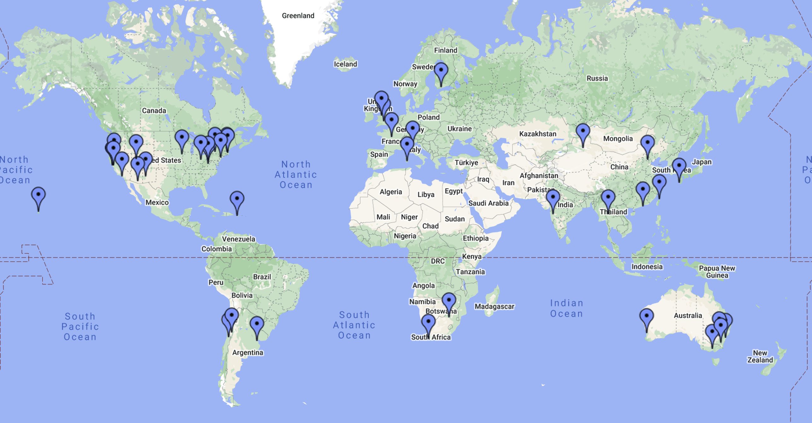

The primary goal of CASPER is to streamline and simplify the design flow of radio astronomy instrumentation by promoting design reuse through the development of platform-independent, open-source hardware and software. Our aim is to couple the real-time streaming performance of application-specific hardware with the design simplicity of general-purpose software. By providing parameterized, platform-independent "gateware" libraries that run on reconfigurable, modular hardware building blocks, we abstract away low-level implementation details and allow astronomers to rapidly design and deploy new instruments.
CASPER Collaborators Around the World:
News
-
We have a new website!
This change has been rapid and the site is under active development. The content from the previous website will be transferred across as soon as possible.